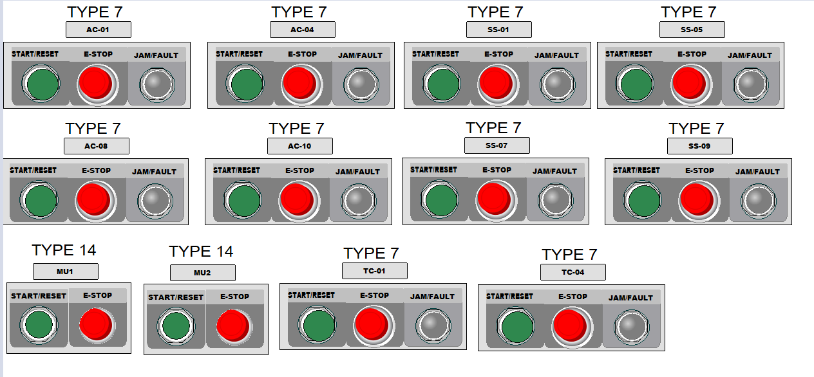
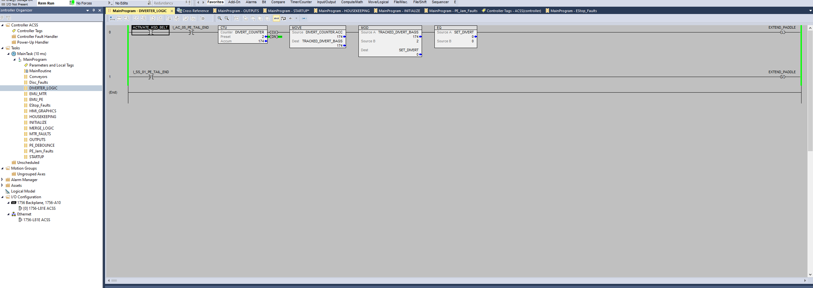

What we offer
ConvSys provides complete conveyor systems delivered as a service: design, PLC ladder logic, simulation, virtual HMI control stations, and operator training. We combine realistic virtual testing with safe, low-cost commissioning so your team can validate and train before physical installation.
Service Features
- Virtual Design & Simulation: Full virtual conveyor models to test flow, sensors, and interactions.
- PLC Ladder Logic: Industry-standard ladder routines and fault handling delivered with the system.
- HMI & Control Stations: Virtual operator stations for safe training and acceptance testing.
- Integration Ready: Routines and interfaces prepared for integration with FactoryTalk and other SCADA/HMI platforms.
- Training & Support: Simulation-based operator training and documentation to shorten ramp-up time.
System Preview




How ConvSys delivers value
Project workflow
- Review system requirements and define material flow, sensors, and control zones.
- Create a virtual conveyor model with PLC logic and diverter control paths.
- Run simulation tests including fault scenarios, jams, and recovery behaviors.
- Configure virtual HMI dashboards and operator training scenarios.
- Deliver documentation, training support, and integration handoff materials.
Complete digital commissioning
Our virtual delivery includes simulated PLC and HMI operation so your team can verify conveyor logic before hardware installation. This reduces commissioning risk and speeds up handoff.
Final Product Preview
Final product overview — conveyor sequencing in action.
Final product demo — 3D conveyor flow and system visualization.
Final product validation — emergency stop and control system response.
Contact
Ready to modernize your conveyor operations? Reach out for a quote, project review, or demo of our virtual system service.
Email: info@convsys.com
Phone: (555) 123-4567